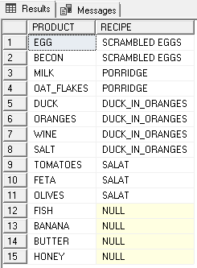
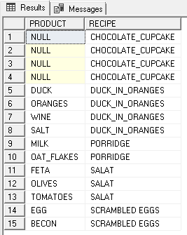
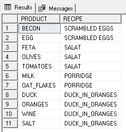
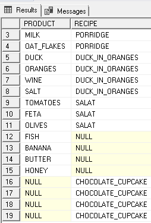
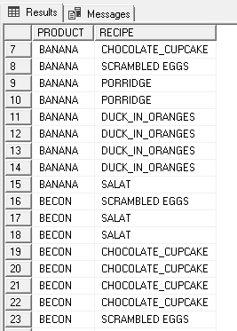
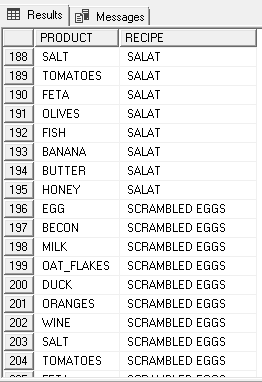

This month Rob Volk (blog | twitter) hosts the #TSQL2SDAY event (see the invitation). I am going to tell you about how I was learning SQL JOIN.
Very often I used analogies to learn or understand something. In my work, I tried to find a similar example fitted to a job that I was currently dealing with. It is helpful for learning and understanding something.
In the past, I saw an example of how to explain fractions and exponentiation using LEGO bricks. It was really nice explanation, and a child can learn it by playing.
I used the analogy when I learned SQL JOIN. I tried to find something that helps me understand these left, right, inner, full and cross – joins. I found out that my kitchen and my library with cookbooks could be my database.
How my analogy works
Every product in my kitchen is in my KITCHEN table, and all of my recipes are in my COOKBOOK table.
So I have a KITCHEN table on the LEFT side and COOKBOOK table on the RIGHT side of the JOIN.
As a result of my LEFT JOIN, I have a set with all of my PRODUCTS from my KITCHEN table which matches some of the RECIPES from COOKBOOK table. Also, in this set, I have PRODUCTS that are not in the COOKBOOK table.
SELECT PRODUCT_NAME, RECIPE FROM KITCHEN LEFT JOIN COOKBOOK ON PRODUCT_ID = INGREDIENTS_ID;

As a result of my RIGHT JOIN, I have a set of all of my RECIPES from COOKBOOK table which matches to PRODUCTS from my KITCHEN table. I have RECIPES for which I have no PRODUCT in the KITCHEN table.
SELECT PRODUCT, RECIPE FROM KITCHEN RIGHT JOIN COOKBOOK ON PRODUCT_ID = INGREDIENTS_ID;

As a result of my INNER JOIN, I have a set of matched RECIPES from COOKBOOK table with PRODUCTS from KITCHEN table. None of the PRODUCT without RECIPE and none of the RECIPE without PRODUCT are in my set.
SELECT PRODUCT, RECIPE FROM KITCHEN INNER JOIN COOKBOOK ON PRODUCT_ID = INGREDIENTS_ID;

As a result of my FULL OUTER JOIN, I have a set of all of the PRODUCTS from KITCHEN table and all of the RECIPES from COOKBOOK table matched together. I also have PRODUCTS with no RECIPE and RECIPES with no PRODUCT.
SELECT PRODUCT, RECIPE FROM KITCHEN FULL OUTER JOIN COOKBOOK ON PRODUCT_ID = INGREDIENTS_ID;

As a result of my CROSS JOIN, I have a set of all of the PRODUCTS from my KITCHEN table combined with all of the RECIPES and also each RECIPE is combined with all of the PRODUCTS from my KITCHEN table.
SELECT PRODUCT, RECIPE FROM KITCHEN CROSS JOIN COOKBOOK;


I like my analogy. It reminds me how tasty SQL learning could be.
Thank you, Magda